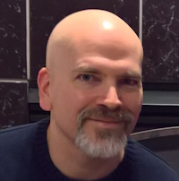

Yes...I finally got my web site back up and running (a big part of it was to get my BlueSky account name to be my domain, which required me bringing it back to life and adding a TXT DNS entry). Well...that's a bit of a stretch - it has no content other than this home page, but it's a start. I don't know if I'm going to make any effort at bringing in any material from the 20ish years I ran the site on OrcsWeb (which got bought by SherWeb and, one day, out of nowhere, decided to shut down my site). Nor do I know if I'm going to put a lot of time adding new content. For now, this page will suffice.
Just in case you want to know what I look like...

I grew up in a very small town called Oostburg, which is located about an hour north of Milwaukee, Wisconsin. I went to college at Marquette University, getting a bachelor's and a master's degree in electrical engineering. I've been a software developer in varying roles ever since I finished college.
I've been married to Elizabeth since September 1997. In November 2000, we made the decision to move to Minnesota, and we eventually bought a house in Shakopee, which is where we've been since 2001. We have two sons, Hayden and Ryan.
I have a number of hobbies:
Jason Bock is a Staff Software Engineer at Rocket Mortgage and a Microsoft MVP (C#). He has nearly 30 years of experience working on several business applications using a diverse set of frameworks and languages. He is the author of a number of books, such as ".NET Development Using the Compiler API", "Metaprogramming in .NET", and "Applied .NET Attributes". He has written numerous articles on software development issues and has presented at conferences and user groups over his career.